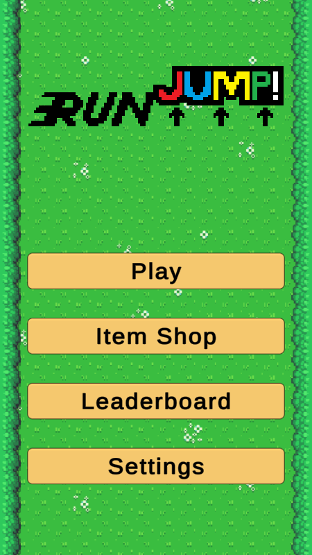
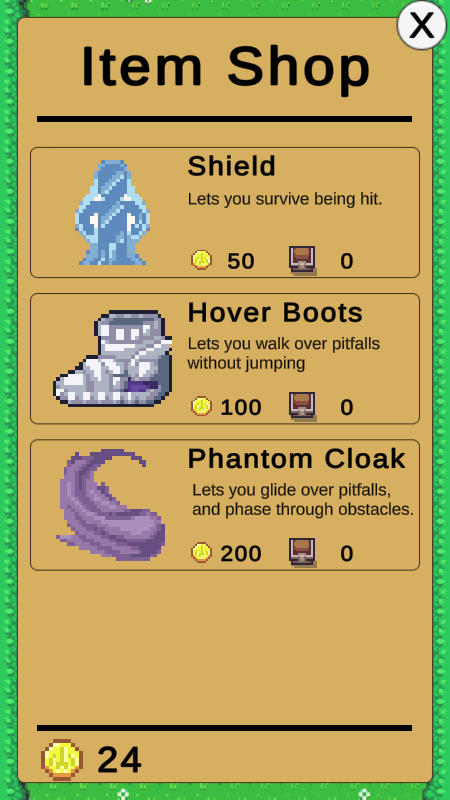
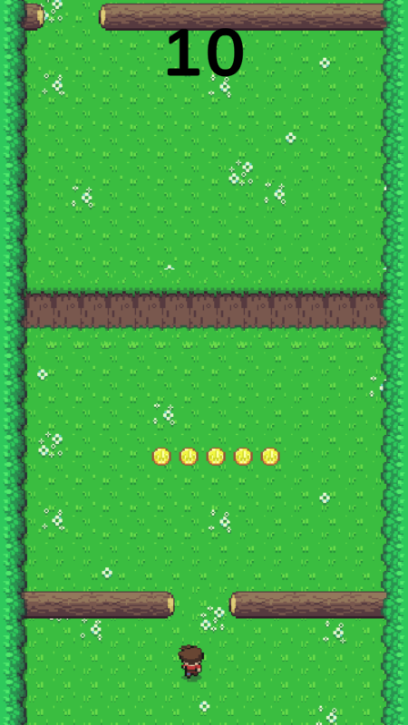
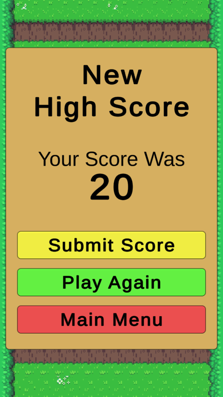

| Project Type: |
Game |
| Genre: |
Mobile/Arcade style game. |
| About Project: |
This game was developed as my semester 6 Software Development Capstone project. It is an endless
runner-style game similar to Flappy Bird. However, from a top-down perspective, such as a 2d Zelda game, instead
of a side-scroller perspective. The player dodges and jumps over obstacles/enemies to earn points.
If the player hits an obstacle/enemy, they lose the game and will have to try again. The player can
collect coins to buy items that help them survive longer and get higher scores. The game tracks
statistics about the player such as highest score, total coins collected, and average life.
NOTE: After not being used for a bit the high-score server endpoint can take up to 30 seconds to
spin up. This can cause a failed connection message when trying to view high scores or upload a new high score.
|
| Technologies: |
Unity, C#, NodeJS |
| Controls: |
- Move: Arrow keys, or Mouse
- Jump: Space, or Left Mouse Click
- Menu: Arrow keys to move selected option, Space to select options, "C" to close a menu, or use the Mouse.
- Use Shield: "Z"
- Use Hover Boots: "X"
- Use Phantom Cloak: "C"
- Use the unlockable easter egg: "V"
|
| Screenshots: |




|
| Project Link: |
Play RunJump
|